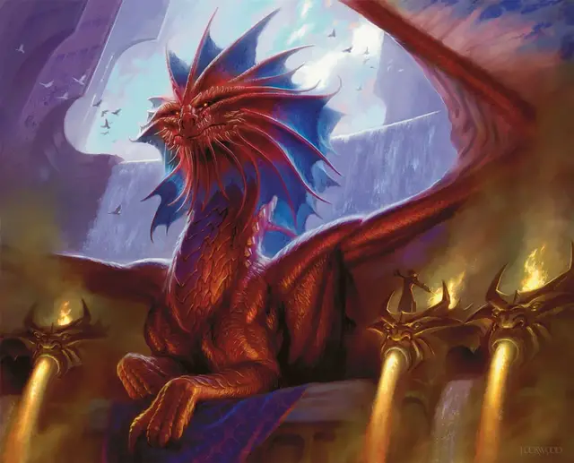

Нив-Миззет
Niv-Mizzet
Громадный Дракон, хаотично-нейтральный, именной НИП

Класс Доспеха 22 (природный доспех)
Хиты 370 (19к20 + 171)
Скорость 40 футов, летая 80 футов, лазая 30 футов
| мод | спас | ||
|---|---|---|---|
| СИЛ | 29 | +9 | +9 |
| ЛОВ | 14 | +2 | +2 |
| ТЕЛ | 29 | +9 | +17 |
| мод | спас | ||
|---|---|---|---|
| ИНТ | 30 | +10 | +18 |
| МДР | 17 | +3 | +11 |
| ХАР | 25 | +7 | +7 |
Навыки Восприятие +11, Магия +18, Проницательность +11
Сопротивление урону звук, психическая энергия, холод
Иммунитет к урону огонь, электричество
Иммунитет к состояниям очарование
Чувства слепое зрение 60 футов, тёмное зрение 120 футов, пассивное Восприятие 21
Языки Общий, Драконий
Опасность 26 (90000 опыта)
Бонус мастерства +8
Особенности
Легендарное сопротивление (3/день). Если Нив-Миззет проваливает спасбросок, он может вместо этого сделать спасбросок успешным.
Концентрация огненного разума. Нив-Миззет может поддерживать концентрацию на двух разных заклинаниях одновременно. Кроме того, он совершает с преимуществом спасброски для поддержания концентрации на заклинаниях.
Сопротивление магии. Нив-Миззет совершает с преимуществом спасброски от заклинаний и прочих магических эффектов.
Мастер-химик. Когда Нив-Миззет накладывает заклинание, которое наносит урон, он может поменять вид урона заклинания на урон звуком, огнём, силовым полем, холодом или электричеством.
Использование заклинаний. Нив-Миззет является заклинателем 20-го уровня. Его базовой характеристикой является Интеллект (Сл спасброска от заклинаний — 26, +18 к попаданию атаками заклинаниями). У него подготовлены следующие заклинания волшебника:
• Заговоры (неограниченно): огненный снаряд [fire bolt], свет [light], фокусы [prestidigitation], луч холода [ray of frost], электрошок [shocking grasp];
• 1 уровень (4 ячейки): обнаружение магии [detect magic], волшебная стрела [magic missile], щит [shield], волна грома [thunderwave], невидимый слуга [unseen servant];
• 2 уровень (3 ячейки): размытый образ [blur], увеличение/уменьшение [enlarge/reduce], пылающий шар [flaming sphere], палящий луч [scorching ray];
• 3 уровень (3 ячейки): контрзаклинание [counterspell], огненный шар [fireball], удержание личности [hold person], молния [lightning bolt], замедление [slow];
• 4 уровень (3 ячейки): смятение [confusion], переносящая дверь [dimension door], изготовление [fabricate], превращение [polymorph], огненная стена [wall of fire];
• 5 уровень (2 ячейки): призыв элементаля [conjure elemental], силовая стена [wall of force];
• 6 уровень (1 ячейка): пляшущая молния [chain lightning], распад [disintegrate], истинное зрение [true seeing];
• 7 уровень (1 ячейка): проекция [project image], изменение тяготения [reverse gravity], телепортация [teleport];
• 8 уровень (1 ячейка): власть над погодой [control weather], лабиринт [maze], слово силы: оглушение [power word stun];
• 9 уровень (1 ячейка): радужная стена [prismatic wall].
Действия
Мультиатака. Нив-Миззет совершает три атаки: одну Укусом и две Когтями.
Укус. Рукопашная атака оружием: +17 к попаданию, досягаемость 15 футов, одна цель. Попадание: Колющий урон 18 (2к8 + 9) плюс урон огнём 14 (4к6).
Когти. Рукопашная атака оружием: +17 к попаданию, досягаемость 10 футов, одна цель. Попадание: Рубящий урон 14 (2к4 + 9).
Хвост. Рукопашная атака оружием: +17 к попаданию, досягаемость 20 футов, одна цель. Попадание: Дробящий урон 16 (2к6 + 9).
Огненное дыхание (перезарядка 5-6). Нив-Миззет выдыхает огонь 90-футовым конусом. Все существа в этой области должны совершить спасбросок Ловкости Сл 25, получая урон огнём 91 (26к6) при провале, или половину этого урона при успехе.
Легендарные действия
Нив-Миззет может совершить 3 легендарных действия, выбирая из представленных ниже вариантов. За один раз можно использовать только одно легендарное действие, и только в конце хода другого существа. Нив-Миззет восстанавливает использованные легендарные действия в начале своего хода.
Заговор. Нив-Миззет накладывает один из своих заговоров.
Атака хвостом. Нив-Миззет совершает атаку хвостом.
Атака крыльями (стоит 2 действия). Нив-Миззет бьёт своими крыльями. Все существа в пределах 15 футов от него должны преуспеть в спасброске Ловкости Сл 25, иначе получат дробящий урон 14 (2к4 + 9) и будут сбиты с ног. После этого Нив-Миззет может пролететь на расстояние, не превышающее половину его скорости полёта.
Драконий гений (стоит 3 действия). Нив-Миззет восстанавливает одну ячейку заклинаний 3-го уровня или ниже.
Описание
Нив-Миззет — это древний дракон, настолько же высокомерный и тщеславный, насколько сильный и невероятно умный. Он является основателем и неизменным лидером Лиги Иззетов; из своей личной лаборатории, находящейся на вершине главного здания гильдии, Нив-Миззет управляет исследованиями и экспериментами своих бесчисленных подчинённых.
Нет никаких сомнений, что этот древний дракон-одно из умнейших существ и сильнейших заклинателей во всей Равнике. Он такой же жадный, как и любой другой дракон, но его сокровища-научные и магические знания. Его амбиции — надвигающаяся угроза в умах всех остальных глав гильдий, но прямое столкновение с ним немыслимо благодаря сочетанию его потрясающей магической силы и физической угрозы, исходящей от огнедышащего дракона с бритвенно-острыми клыками.